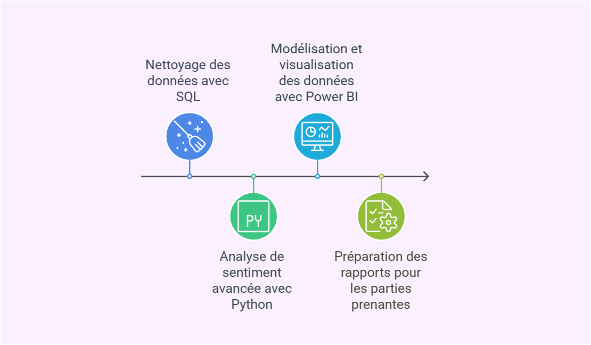

Analyse Marketing Data-Driven
ShopNova, un magasin en ligne, fait face à une baisse de l'engagement et des taux de conversion malgré des campagnes marketing. J'ai réalisé une analyse en utilisant SQL pour exploiter les données, Python pour l'analyse des sentiments des avis clients, et Power BI pour visualiser les résultats. L'analyse a révélé des variations saisonnières dans les conversions et une baisse d'engagement sur les réseaux sociaux. Des recommandations ont été faites pour améliorer le parcours client, renforcer l'engagement et traiter les avis négatifs, afin d'optimiser les performances marketing.
 Voir le projet Voir le rapport